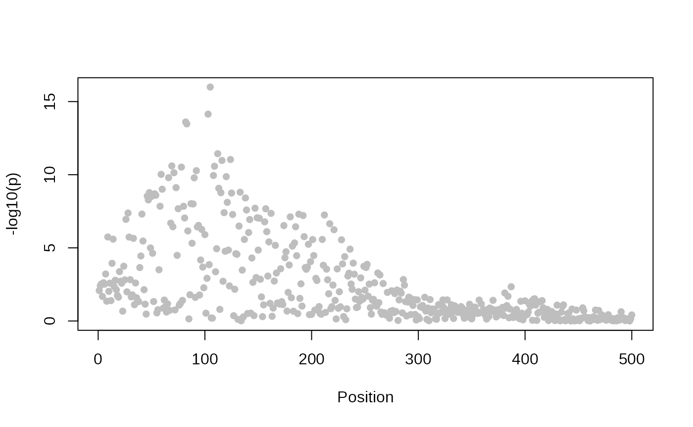
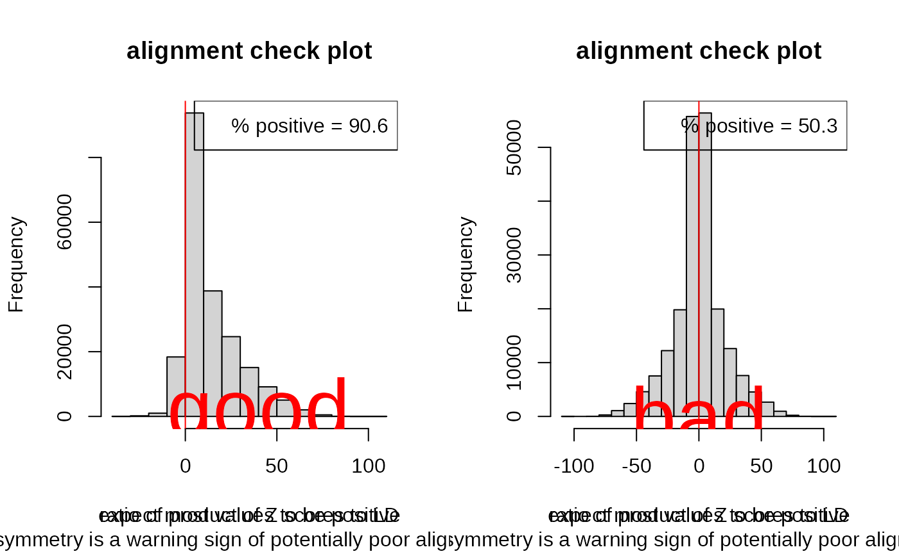

The enumeration approaches to coloc coloc.abf and coloc.susie require the same data
format. To be flexible, coloc.abf allows a wider variety of
inputs, which can sometimes be confusing. This document aims to set out
what ideal and acceptable data structures are, as well as covering some
points on how you should select the SNPs for study.
SNPs must * have summary data available in both studies * cover a single genomic region (perhaps defined by distance about some GWAS peak or delimited by recombination hotspots), and * represent a dense coverage of the region
This can result in up to 10,000 SNPs on larger regions. A single genomic region does not correspond to the whole genome, nor to a whole chromosome. Coloc also does not automatically split chromosomes or a genome into regions. It is assumed the user can look at their data, identify a region with overlapping GWAS signals between two studies, and decide on the set of SNPs to include. Some utilities are provided which can help check regions are sensible.
Please do include all SNPs you have in the region: do not trim by significance or MAF or other means. Coloc enumerates all possible configureations of shared and non-shared causal variants and evaluates their relative support; it cannot do this if it does not have all the SNPs available.
Colocalisation and fine-mapping work through evaluating approximate
Bayes factors summarising evidence for association at each SNP. This
requires knowing the estimated effect size
(beta) and its uncertainty
(varbeta).
is the standard error of
,
squared. It is also good practice to supply SNP names
(snp), and SNP positions (position) are useful
if you want to use coloc’s plot_dataset().
We also need a prior on the true effect sizes at causal variants, which is different depending on whether you have a quantitative or case-control (binary) trait. To estimate a prior, we need to know the trait standard deviation (which allows us to interpret the scale of the estimated beta).
A minimum coloc dataset is a list, containing a mix
of vectors (values that vary across snps, such as effect sizes
beta or variance of beta varbeta) and scalars
(values assumed to be constant across snps, such as sample size
[N] or data type [type="cc" for case control
or type="quant" for quantitative]). See
?check_dataset for the full set of entries, some
combination of which are compulsory.
It can be useful to run check_dataset() on each of your
datasets if coloc functions aren’t running. It will return NULL if it
finds no errors. It will stop with error if there are issues that
absolutely must be fixed to run coloc, but may print warnings if it sees
something merely suspicious - eg if there is no strong signal of
association.
Coloc comes with test data, so you can explore the structure for a quantitative trait. Here we show the minimum dataset needed for a quantitative trait.
## This is coloc version 6.0.0
data(coloc_test_data)
attach(coloc_test_data)
minimum_data=D1[c("beta","varbeta","snp","position","type","sdY")]
str(minimum_data)## List of 6
## $ beta : num [1:500] 0.337 0.211 0.257 0.267 0.247 ...
## $ varbeta : num [1:500] 0.01634 0.00532 0.00748 0.01339 0.00664 ...
## $ snp : chr [1:500] "s1" "s2" "s3" "s4" ...
## $ position: int [1:500] 1 2 3 4 5 6 7 8 9 10 ...
## $ type : chr "quant"
## $ sdY : num 1.1
check_dataset(minimum_data,warn.minp=1e-10)## NULLHere we see (from str) that minimum_data is
a list. It has vector entries beta, varbeta, snp and position, all of
the same length (the number of snps in the region) and scalar entries
for type and sdY (the standard deviation of the quantitative trait).
check_dataset() issues a warning that
the minimum p value exceeds warn.minp. (The default value
for warn.minp is 10^{-6}). The warning doesn’t mean you
can’t run coloc - it is perfectly valid to assess that there is only
evidence for association in one of your datasets, but it may alert you
to check something if you thought there was strong association
there. One common mistake is to use the standard error of beta in place
of the variance of beta. If your dataset provides the standard error,
simply square it to get the variance.
It’s also useful to plot your datasets, and check * coverage is dense * the level of association matches your expectation
plot_dataset(minimum_data)
For a case control trait, you would need to give the
type as “cc”:
minimum_ccdata=D1[c("beta","varbeta","snp","position")]
minimum_ccdata$type="cc"
str(minimum_ccdata)## List of 5
## $ beta : num [1:500] 0.337 0.211 0.257 0.267 0.247 ...
## $ varbeta : num [1:500] 0.01634 0.00532 0.00748 0.01339 0.00664 ...
## $ snp : chr [1:500] "s1" "s2" "s3" "s4" ...
## $ position: int [1:500] 1 2 3 4 5 6 7 8 9 10 ...
## $ type : chr "cc"
check_dataset(minimum_ccdata)## NULLIn either case, you can see that the lengths of beta, varbeta, snp
and position are the same. They are assumed to represent the same snps
in the same order. If you have your data in a data.frame, you could use
as.list() to convert to a list, and then add the other
elements, but you cannot pass a data.frame to coloc, because elements
like type need to be of length 1.
coloc is used to analyse exactly two datasets. The snp identifiers are used to match snps between datasets, and only the snps that appear in both datasets will contribute to the analysis.
Often, sdY is not available for quantitative datasets. If the study say they standardised their trait to have variance 1, then you can set =sdY= to 1. Otherwise coloc can estimate it, but needs MAF and sample size information too. So the dataset would look like:
## List of 7
## $ beta : num [1:500] 0.337 0.211 0.257 0.267 0.247 ...
## $ varbeta : num [1:500] 0.01634 0.00532 0.00748 0.01339 0.00664 ...
## $ snp : chr [1:500] "s1" "s2" "s3" "s4" ...
## $ position: int [1:500] 1 2 3 4 5 6 7 8 9 10 ...
## $ type : chr "quant"
## $ N : int 1000
## $ MAF : num [1:500] 0.031 0.166 0.0925 0.0405 0.118 ...
check_dataset(nosdY_data)## NULLbeta and varbeta are preferred. Please supply them if you have them, especially in the case of imputed data where they capture the effects of imperfect imputation. But if you don’t have them, coloc can estimate them, given p values, MAF, sample size and, if case-control data, the fraction of samples that are cases:
nobeta_data=D1[c("MAF","snp","position","type","sdY","N")]
nobeta_data$pvalues=pnorm(-abs(D1$beta/sqrt(D1$varbeta)))*2
str(nobeta_data)## List of 7
## $ MAF : num [1:500] 0.031 0.166 0.0925 0.0405 0.118 ...
## $ snp : chr [1:500] "s1" "s2" "s3" "s4" ...
## $ position: int [1:500] 1 2 3 4 5 6 7 8 9 10 ...
## $ type : chr "quant"
## $ sdY : num 1.1
## $ N : int 1000
## $ pvalues : num [1:500] 0.0083 0.00385 0.00294 0.02088 0.00242 ...
check_dataset(nobeta_data)## NULL
nobeta_ccdata=D1[c("MAF","snp","position","N")]
nobeta_ccdata$pvalues=pnorm(-abs(D1$beta/sqrt(D1$varbeta)))*2
nobeta_ccdata$type="cc"
nobeta_ccdata$s=0.5
str(nobeta_ccdata)## List of 7
## $ MAF : num [1:500] 0.031 0.166 0.0925 0.0405 0.118 ...
## $ snp : chr [1:500] "s1" "s2" "s3" "s4" ...
## $ position: int [1:500] 1 2 3 4 5 6 7 8 9 10 ...
## $ N : int 1000
## $ pvalues : num [1:500] 0.0083 0.00385 0.00294 0.02088 0.00242 ...
## $ type : chr "cc"
## $ s : num 0.5
check_dataset(nobeta_ccdata)## NULLNote that coloc doesn’t mind if your dataset has more entries than it minimally needs, it will use what it needs, preferring supplied beta/varbeta and sdY over estimation, and leave the rest.
coloc.susie
coloc.abf makes the simplifying assumption that each
trait has at most one causal variant in the region under consideration.
This means it does not need to know about correlation (LD) between SNPs,
because no model under consideration has two or more SNPs in it.
coloc.susie extends the functionality by allowing more than
one causal variant, but this means it needs to know the LD between the
SNPs. You may be able to get this from the study data, but if not,
reference data such as 1000 Genomes can be used.
Our test data has an LD matrix already. This will be a square numeric matrix of dimension equal to the number of SNPs, with dimnames corresponding to the SNP ids.
str(D1$LD)## num [1:500, 1:500] 1 0.365 0.54 0.851 0.463 ...
## - attr(*, "dimnames")=List of 2
## ..$ : chr [1:500] "s1" "s2" "s3" "s4" ...
## ..$ : chr [1:500] "s1" "s2" "s3" "s4" ...One of the nice things about coloc.abf is that it does
not assume that LD structures are similar between studies, as long as
there is a dense map of SNPs across the region. The same thing still
applies to coloc.susie, just add an appropriate LD matrix
to each study.
beta coefficients in GWAS studies report the effect of one allele with respect to the other. That is, if you see results looking like
| CHR38 | BP38 | REF | ALT | SNPID | P | BETA | SE | maf | maf_cases | maf_controls | |
|---|---|---|---|---|---|---|---|---|---|---|---|
| 1 | 2101817 | G | A | rs908742 | 0.0826 | 0.0749 | 0.0432 | 0.4394 | 0.456 | 0.4391 | |
| 1 | 2109497 | T | C | rs4648808 | 0.8695 | -0.0144 | 0.0877 | 0.9347 | 0.9344 | 0.9347 | |
| 1 | 2126584 | A | G | rs3128291 | 0.7334 | -0.0306 | 0.0897 | 0.939 | 0.9371 | 0.9391 | |
| 1 | 2137467 | G | T | rs3128296 | 0.8802 | -0.0124 | 0.0826 | 0.9268 | 0.9267 | 0.9268 | |
| 1 | 2139901 | C | A | rs424079 | 0.6399 | -0.0207 | 0.0442 | 0.6347 | 0.6269 | 0.6348 |
the beta is telling you about the effect of allele A compared to allele G at the snp rs908742. If the alleles were reversed, beta would be -0.0826. The LD matrix needs to be aligned the same way. This will be easy if you have the GWAS data and are making the LD matrix yourself. If you get it from a public source, it will almost certainly be telling you about the LD between non-reference alleles. In this case, you need to make sure your data is also listing the non-reference allele as the “alternative” or “risk” allele. If it is not, switch the sign of beta.
To avoid hassles, I recommend: * if using GWAS catalog data, download
the harmonised
version which will do this for you. * if using eQTL summary data
that has been processed by the eQTL
catalogue, use that version because it will also be harmonised *
Otherwise, check the alleles in your summary table match those in the
information files from the LD source * Finally, always plot the coloc
result with the sensitivity
function because weird effects are much easier to understand
visually
You can also use the coloc function check_alignment as a
visual guide. It compares the product of the Z scores for all SNP pairs
against their correlation, and plots a histogram of this ratio for SNPs
in some degree of LD. We do not expect to see strongly negative products
of Z scores for strongly positive correlations or vice versa. Therefore
this plot should be skewed to have more positive values than
negative. Here I show a good (left) and bad (right) example.
par(mfrow=c(1,2))
check_alignment(goodD)## [1] 0.9061496
text(40,200,"good",col="red",cex=4)
check_alignment(badD)## [1] 0.4999569
text(0,200,"bad",col="red",cex=4)